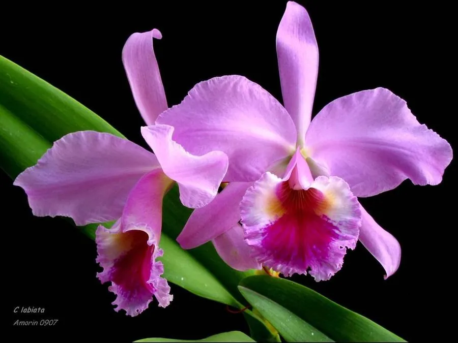

花卉与草本 · 植物界
卡特兰 Cattleya labiata

兰科多年生附生草本，花朵硕大艳丽、唇瓣宽大如裙，香气浓郁，是洋兰中最负盛名的种类之一，原产巴西。
- 分类
- 门被子植物门纲木兰纲目天门冬目科兰科属卡特兰属
- 栖息环境
- 巴西热带雨林的树干与岩石上，喜温暖、湿润、半阴
- 地理分布
- 原产巴西，现世界各地广泛栽培，是重要的洋兰切花
- 保护级别
- 暂无评估；CITES 附录Ⅱ（兰科植物）
物种志
卡特兰为兰科卡特兰属多年生附生草本，假鳞茎棍棒状，叶片 1–2 枚，革质。花大，直径 10–20 厘米，有紫红、粉、白、黄等色，唇瓣宽大、边缘皱褶，形似裙摆，香气浓郁，花期秋冬；果实为蒴果。
卡特兰原产巴西的热带雨林，附生于树干和岩石上，喜温暖、湿润、半阴和通风良好的环境，忌强光暴晒和积水。它花朵硕大艳丽、唇瓣宽大如裙，香气浓郁，是洋兰中最负盛名的种类之一，也是重要的切花材料；栽培常用树皮、水苔等透气基质，需保持较高空气湿度和明亮散射光。
形态与习性
- 株高花径 10–20 厘米
- 花期秋冬，香气浓郁
- 果期花后结蒴果
- 光照喜半阴散射光
- 水分喜湿润，空气湿度较高
- 土壤以树皮、水苔等透气基质栽培
- 繁殖分株繁殖
- 主要用途切花、盆栽观赏
趣味知识
- 卡特兰花朵硕大，唇瓣宽大如裙，是洋兰中最负盛名的种类之一。
- 它原产巴西热带雨林，是附生兰花。
- 卡特兰香气浓郁，是重要的切花材料。
- 栽培需保持较高空气湿度和明亮散射光。